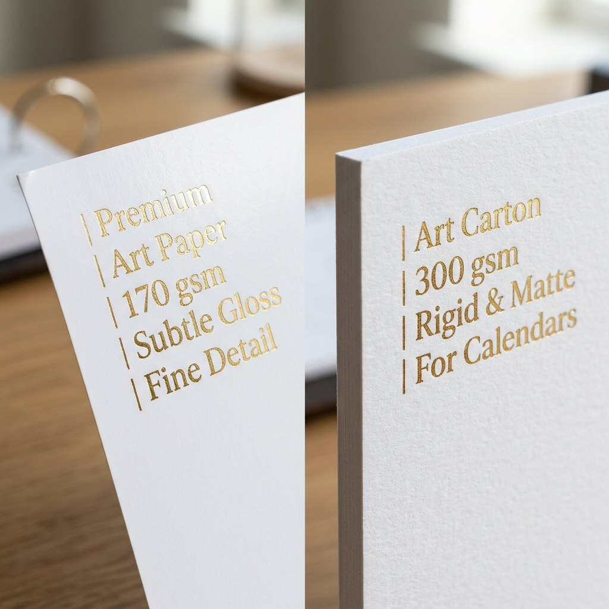
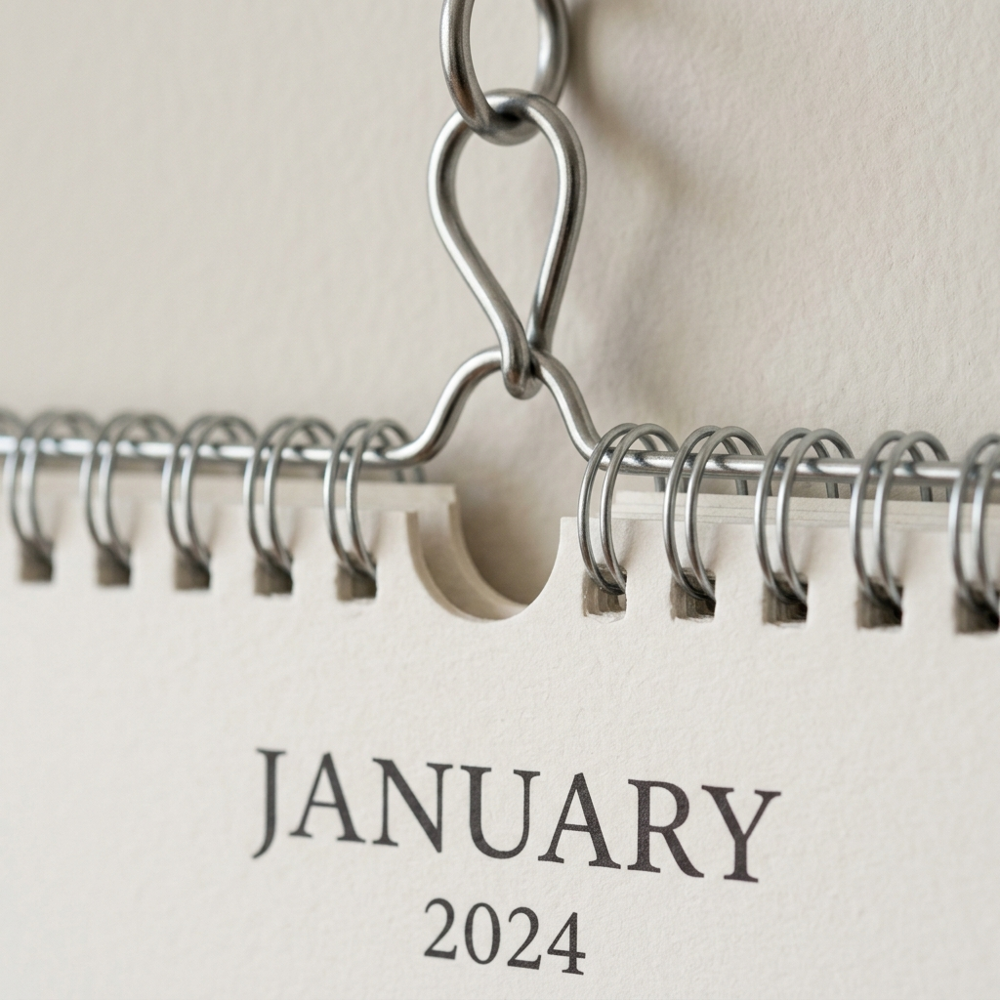

Kalender gantung custom adalah kalender dinding yang dirancang dan dicetak sesuai kebutuhan pemesan, mulai dari jumlah lembar, bahan kertas, hingga jenis finishing.
Media ini dipilih perusahaan maupun individu karena dipajang di dinding sepanjang tahun sehingga desain dan pesan yang tercetak terus terlihat setiap hari.
Daftar Isi Artikel (Markdown TOC)
Ringkasan Inti:
- Kalender gantung tersedia dalam beberapa format, dari poster satu lembar hingga dua belas lembar per bulan.
- Pemilihan bahan kertas menentukan ketahanan dan kesan visual kalender selama dipajang.
- Jenis finishing seperti klep seng, kawat spiral, atau eyelet memengaruhi cara kalender digantung dan dibalik.
- Desain siap cetak memerlukan resolusi tinggi, profil warna CMYK, dan penanggalan yang lengkap.
- Biaya cetak bervariasi tergantung bahan, jumlah lembar, dan jumlah eksemplar yang dipesan.
Mengapa Kalender Gantung Custom Masih Menjadi Media Promosi & Souvenir Favorit?
Kalender gantung tetap dipilih karena menggabungkan fungsi praktis sebagai alat bantu penjadwalan harian dengan peran sebagai media promosi yang dilihat berulang kali sepanjang tahun.
Kombinasi ini membuatnya berbeda dari media promosi sekali pakai seperti brosur atau flyer.
Nilai Fungsional dan Daya Tahan 365 Hari
Selama dipajang, kalender gantung digunakan sebagai acuan tanggal, jadwal kerja, dan pengingat acara sehari-hari.
Karena posisinya biasanya berada di area yang sering dilewati, seperti ruang kerja atau ruang tamu, kalender ini dilihat berulang kali dalam satu hari tanpa perlu usaha tambahan dari penerimanya.
Efektivitas Passive Brand Awareness untuk Bisnis
Bagi perusahaan, kalender gantung berfungsi sebagai media pengingat merek yang pasif.
Logo, warna, dan pesan perusahaan tetap terlihat setiap kali seseorang melihat tanggal, tanpa perlu ada tindakan aktif dari audiens.
Pola paparan berulang semacam ini umumnya dianggap efektif untuk menjaga ingatan terhadap merek dibandingkan media promosi yang hanya dilihat sekali.
Mengenal Variasi Format & Jumlah Lembar Kalender Gantung
Format kalender gantung ditentukan oleh jumlah lembar dan cara pembagian bulan pada tiap lembarnya, sehingga pemesan dapat menyesuaikan dengan kebutuhan tampilan dan anggaran.
Berikut variasi format yang umum dipesan:
- Kalender poster satu lembar, menampilkan seluruh dua belas bulan dalam satu halaman.
- Kalender dua lembar, dengan pembagian enam bulan per lembar.
- Kalender tiga lembar, membagi tahun menjadi tiga bagian.
- Kalender empat lembar, dengan pembagian tiga bulan per lembar.
- Kalender enam lembar, membagi tahun menjadi enam bagian dengan dua bulan per lembar.
- Kalender dua belas lembar, satu lembar untuk satu bulan, memberi ruang desain paling luas per bulan.
- Ukuran cetak yang umum digunakan berkisar dari sekitar 32×48 cm hingga 44×64 cm, tergantung kebutuhan tampilan dan lokasi pemasangan.
Kalender Poster 1 Lembar
Format ini cocok untuk kebutuhan yang mengutamakan efisiensi biaya dan kepraktisan produksi karena hanya memerlukan satu kali proses cetak dan finishing yang ringkas, umumnya menggunakan eyelet di bagian atas.
Kalender Dinding 2, 3, 4, 6, hingga 12 Lembar
Semakin banyak jumlah lembar, semakin luas ruang desain yang tersedia untuk setiap periode bulan, namun proses produksi dan finishing menjadi lebih kompleks karena melibatkan penjilidan antar lembar, misalnya dengan klep seng atau kawat spiral.
Memilih Bahan Kertas yang Tepat untuk Kalender Gantung
Bahan kertas menentukan ketebalan, daya tahan, dan tampilan akhir kalender selama dipajang sepanjang tahun, sehingga pemilihannya perlu disesuaikan dengan tujuan penggunaan dan anggaran.
Art Paper vs Art Carton: Mana yang Lebih Bagus?
Art paper dengan gramasi sekitar 120 hingga 210 gsm memiliki permukaan halus dan sedikit mengilap sehingga menghasilkan warna cetak yang tajam, cocok untuk kalender promosi dengan desain full color.
Art carton, dengan gramasi sekitar 230 hingga 310 gsm, merupakan versi yang lebih tebal dan kaku sehingga lebih tahan terhadap lipatan ketika dipajang dalam waktu lama.
Pemilihan antara keduanya umumnya bergantung pada prioritas: art paper untuk hasil warna yang tajam dengan biaya lebih hemat, atau art carton untuk kekakuan dan kesan lebih mewah.

Alternatif Kertas Premium: Ivory, Matte Paper, dan Linen
Kertas ivory menawarkan kombinasi satu sisi glossy dan satu sisi doff dengan warna dasar off-white, cocok untuk kalender bernuansa elegan.
Matte paper memberikan hasil cetak doff yang tidak memantulkan cahaya dan nyaman dibaca dari berbagai sudut, sekaligus mudah ditulis dengan pulpen atau pensil.
Linen paper memiliki tekstur fisik menyerupai serat kain, memberikan kesan eksklusif dan sering dipilih untuk edisi kalender premium atau kado korporat.
Jenis Finishing Kalender Gantung dan Keunggulannya
Finishing menentukan cara kalender digantung dan dibalik setiap bulan, sehingga pemilihannya memengaruhi kenyamanan penggunaan sekaligus kesan visual produk akhir.
Finishing Klep Seng (Klem Seng)
Finishing ini menggunakan lempengan seng dengan panjang sekitar 36 hingga 42 cm yang dilengkapi lubang di bagian tengah untuk digantung dengan paku.
Cara penggunaannya adalah dengan menyobek lembaran bulan yang telah lewat, sehingga finishing ini tergolong ekonomis dan umum dipakai untuk kalender dengan berbagai jumlah lembar.
Finishing Kawat Spiral (Wire-O)
Finishing kawat spiral menggunakan kawat berbentuk loop yang memungkinkan setiap lembar kalender dibalik dengan mudah tanpa merobek kertas.
Finishing ini tersedia dalam beberapa pilihan ukuran dan rasio, serta memberikan kesan lebih rapi dan tahan lama dibandingkan klep seng.

Finishing Eyelet / Mata Ayam
Eyelet berupa ring logam kecil berdiameter sekitar 5,5 mm yang dipasang di bagian atas kertas sebagai lubang gantungan.
Finishing ini paling sering digunakan untuk kalender poster satu lembar karena prosesnya sederhana dan biayanya relatif hemat.
Panduan Teknis Desain Siap Cetak (Print-Ready)
File desain kalender gantung perlu memenuhi standar teknis tertentu agar hasil cetak sesuai dengan tampilan pada layar dan tidak mengalami masalah saat proses produksi.
Standar Resolusi 300 ppi dan Profil Warna CMYK
Desain sebaiknya dibuat dengan skala 1:1 terhadap ukuran cetak, resolusi minimal 300 ppi, dan profil warna CMYK karena warna pada layar (RGB) dapat berbeda hasilnya saat dicetak.
Format file yang umum diterima antara lain PDF, CDR, AI, atau file gambar beresolusi tinggi seperti JPEG dan TIFF, dengan font yang sudah dikonversi menjadi kurva agar tidak berubah saat dibuka di perangkat lain.
Integrasi Penanggalan Masehi, Jawa, dan Hijriah
Kalender yang digunakan di Indonesia umumnya perlu mencantumkan penanggalan Masehi sebagai acuan utama, disertai penanggalan Jawa dan Hijriah sebagai informasi tambahan, serta penandaan hari libur nasional agar kalender lebih informatif dan fungsional bagi penggunanya.
Berapa Kisaran Biaya Cetak Kalender Gantung Custom?
Biaya cetak kalender gantung custom secara umum dipengaruhi oleh jenis bahan kertas, jumlah lembar, jenis finishing, dan jumlah eksemplar yang dipesan.
Semakin tebal bahan yang dipilih dan semakin banyak jumlah lembar per kalender, biaya produksi umumnya akan semakin tinggi.
Begitu pula jumlah pesanan: pencetakan dalam jumlah besar biasanya mendapatkan harga satuan yang lebih hemat dibandingkan pesanan dalam jumlah kecil.
Karena rincian harga dapat berbeda antar percetakan, sebaiknya calon pemesan meminta penawaran harga langsung dengan menyebutkan spesifikasi bahan, jumlah lembar, finishing, dan jumlah eksemplar yang diinginkan.
Kesimpulan & Checklist Sebelum Memesan di Percetakan
Sebelum memesan kalender gantung custom, pastikan beberapa hal berikut sudah dipertimbangkan:
- Tentukan jumlah lembar dan ukuran kalender sesuai kebutuhan tampilan dan lokasi pemasangan.
- Pilih bahan kertas yang sesuai antara kebutuhan warna tajam (art paper), ketahanan (art carton), kenyamanan menulis (matte paper), atau kesan premium (ivory dan linen).
- Sesuaikan jenis finishing dengan cara penggunaan, apakah lembaran akan dibalik (kawat spiral) atau disobek (klep seng), atau hanya digantung sebagai poster (eyelet).
- Siapkan file desain dengan resolusi 300 ppi, profil warna CMYK, dan font yang sudah dikonversi.
- Pastikan elemen penanggalan Masehi, Jawa, Hijriah, dan hari libur nasional sudah lengkap.
- Konfirmasikan estimasi biaya dan waktu produksi langsung ke percetakan sesuai spesifikasi yang dipilih.